# Standard import convention
import matplotlib.pyplot as plt
import numpy as np
import pandas as pd
# For displaying plots directly in Jupyter notebooks
%matplotlib inlinetitle: “Data Visualization with Matplotlib” subtitle: “Business Analytics with Python” author: “Dr. Smith” institution: “University of South Florida” date: “2025-03-04” execute: echo: true warning: false format: html: embed-resources: true page-layout: full grid: body-width: 1400px sidebar-width: 250px margin-width: 0px gutter-width: 1.5rem toc: true toc-location: left toc-depth: 2 number-sections: false highlight-style: github code-fold: false code-tools: false code-block-bg: “#f5f5f5” code-block-border-left: “#31BAE9” code-block-line-numbers: false code-overflow: scroll code-link: false theme: light: flatly dark: darkly callout-appearance: simple self-contained: true code-line-numbers: true —
Introduction to Data Visualization with Matplotlib
Welcome to the world of data visualization! In the realm of business analytics, the ability to transform raw data into meaningful visual insights is paramount. Matplotlib, the foundational plotting library in Python, empowers us to do just that. This lecture will guide you through the essentials of Matplotlib, enabling you to create compelling visualizations that drive informed business decisions.
Learning Objectives
By the end of this lecture, you should be able to:
- Understand the importance of data visualization in business analytics.
- Create basic plots using Matplotlib.
- Customize plots with titles, labels, legends, and colors.
- Generate different types of visualizations suitable for business data.
- Integrate Matplotlib with Pandas for efficient workflows.
- Apply best practices for creating effective business visualizations.
Why Data Visualization?
Data visualization is more than just making pretty pictures. It’s about turning data into actionable insights. Here’s why it’s crucial in business analytics:
- Information Processing: Our brains are wired to process visual information much faster than text or numbers. Visuals help us quickly grasp complex data.
- Pattern Recognition: Visualizations reveal trends, patterns, and outliers that might be hidden in tables or raw data.
- Communication: Effective visuals communicate insights to stakeholders more clearly and persuasively, facilitating better decision-making.
- Decision Support: Well-designed visualizations provide a clear and concise overview of key metrics, supporting faster and more informed business decisions.
“The greatest value of a picture is when it forces us to notice what we never expected to see.” — John Tukey
Introduction to Matplotlib
Matplotlib is the cornerstone of data visualization in Python. While libraries like Seaborn and Plotly offer higher-level interfaces, a solid understanding of Matplotlib is essential because:
- It forms the foundation for many other visualization libraries.
- It provides extensive customization options, giving you fine-grained control over your plots.
- It integrates seamlessly with NumPy and Pandas, the workhorses of data manipulation in Python.
Let’s begin by importing Matplotlib and other necessary libraries:
Matplotlib offers two main interfaces:
- MATLAB-style interface: Uses state-based
pyplotfunctions (e.g.,plt.plot()). - Object-oriented interface: Provides more flexibility and control through figure and axes objects.
We’ll focus on the object-oriented approach, which is more powerful and adaptable for complex business visualizations.
Basic Plotting with Matplotlib
Creating a Simple Line Plot
Let’s start with a basic line plot to visualize monthly sales data.
# Monthly sales data (in thousands)
months = range(1, 13)
sales_2024 = [45, 48, 53, 58, 63, 68, 72, 74, 70, 65, 60, 55]
# Create a figure and axes object
fig, ax = plt.subplots(figsize=(6, 4))
# Plot the data
ax.plot(months, sales_2024)
# Add title and labels
ax.set_title('Monthly Sales (2024)', fontsize=15)
ax.set_xlabel('Month', fontsize=12)
ax.set_ylabel('Sales (thousands $)', fontsize=12)
# Display the plot
plt.tight_layout()
plt.show()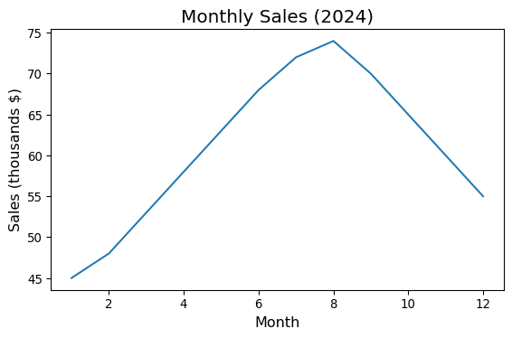
Understanding Figure and Axes
The core of Matplotlib’s object-oriented approach is the Figure and Axes objects:
- Figure: The overall window or page that contains everything.
- Axes: The individual plot within the figure. You can have multiple axes in a single figure.
# Creating a figure with specific size (width, height in inches)
fig = plt.figure(figsize=(7, 4))
# Adding an axes to the figure (left, bottom, width, height in figure percentage)
ax = fig.add_subplot(111) # 1 row, 1 column, 1st plot
# A more common shorthand for simple cases
fig, ax = plt.subplots(figsize=(7, 4))Customizing Plots
Colors, Line Styles, and Markers
Let’s enhance our line plot by adding another year’s sales data and customizing the appearance.
# Compare sales across two years
sales_2023 = [42, 43, 48, 52, 55, 59, 64, 67, 63, 59, 55, 50]
fig, ax = plt.subplots(figsize=(6, 4))
# Add multiple lines with different styles
ax.plot(months, sales_2024, color='blue', linestyle='-', marker='o',
linewidth=2, markersize=8, label='2024')
ax.plot(months, sales_2023, color='red', linestyle='--', marker='s',
linewidth=2, markersize=8, label='2023')
# Add a legend
ax.legend(fontsize=12)
# Add title and labels
ax.set_title('Monthly Sales Comparison', fontsize=15)
ax.set_xlabel('Month', fontsize=12)
ax.set_ylabel('Sales (thousands $)', fontsize=12)
# Add grid for better readability
ax.grid(True, linestyle='--', alpha=0.7)
plt.tight_layout()
plt.show()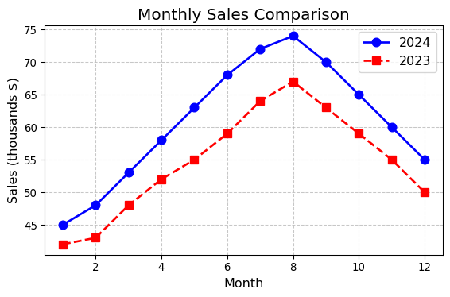
Customizing Tick Marks
Let’s further customize the plot by setting specific tick marks and formatting the y-axis.
# Using the same sales data
fig, ax = plt.subplots(figsize=(6, 4))
ax.plot(months, sales_2024, color='blue', marker='o')
# Set specific x-ticks with month names
month_names = ['Jan', 'Feb', 'Mar', 'Apr', 'May', 'Jun',
'Jul', 'Aug', 'Sep', 'Oct', 'Nov', 'Dec']
ax.set_xticks(months)
ax.set_xticklabels(month_names, rotation=45)
# Format y-axis with dollar signs
ax.set_yticklabels([f'${x:,.0f}K' for x in ax.get_yticks()])
plt.tight_layout()
plt.show()/tmp/ipykernel_784463/1976701438.py:13: UserWarning: set_ticklabels() should only be used with a fixed number of ticks, i.e. after set_ticks() or using a FixedLocator.
ax.set_yticklabels([f'${x:,.0f}K' for x in ax.get_yticks()])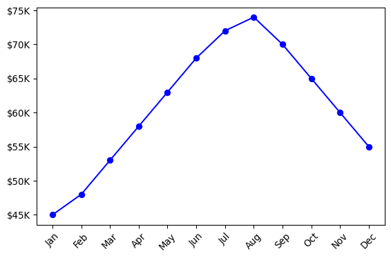
Business-Relevant Plot Types
Bar Charts for Comparison
Bar charts are excellent for comparing categories.
# Department performance data
departments = ['Sales', 'Marketing', 'Operations', 'Finance', 'HR']
performance = [92, 85, 78, 88, 72]
fig, ax = plt.subplots(figsize=(6, 4))
# Create a bar chart
bars = ax.bar(departments, performance, color='skyblue', edgecolor='navy')
# Add data labels above each bar
for bar in bars:
height = bar.get_height()
ax.text(bar.get_x() + bar.get_width()/2., height + 1,
f'{height}%', ha='center', va='bottom')
ax.set_title('Department Performance Scores', fontsize=15)
ax.set_xlabel('Department', fontsize=12)
ax.set_ylabel('Performance Score (%)', fontsize=12)
ax.set_ylim(0, 100) # Set y-axis from 0 to 100 for percentage
plt.tight_layout()
plt.show()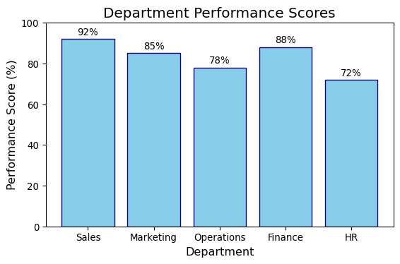
Horizontal Bar Charts
Horizontal bar charts are useful when category names are long.
# Product revenue contribution
products = ['Enterprise Software Solutions', 'Managed IT Services',
'Cloud Migration Services', 'Cybersecurity Consulting',
'Data Analytics Platform']
revenue_pct = [35, 25, 15, 15, 10]
fig, ax = plt.subplots(figsize=(7, 4))
# Create horizontal bar chart
ax.barh(products, revenue_pct, color='lightgreen', edgecolor='darkgreen')
# Add data labels inside each bar
for i, v in enumerate(revenue_pct):
ax.text(v + 1, i, f'{v}%', va='center')
ax.set_title('Revenue Contribution by Product Line', fontsize=15)
ax.set_xlabel('Revenue Percentage (%)', fontsize=12)
ax.set_xlim(0, 50) # Set x-axis limit with some padding
plt.tight_layout()
plt.show()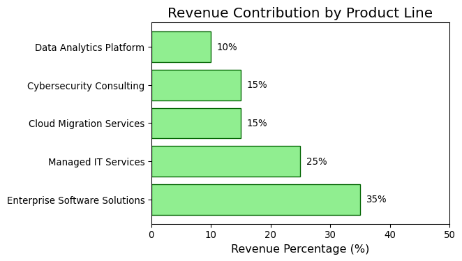
Pie Charts for Composition
Pie charts show the composition of a whole.
# Market share data
companies = ['Our Company', 'Competitor A', 'Competitor B', 'Competitor C', 'Others']
market_share = [28, 24, 22, 16, 10]
fig, ax = plt.subplots(figsize=(6, 4))
# Create pie chart
wedges, texts, autotexts = ax.pie(market_share, labels=companies, autopct='%1.1f%%',
startangle=90, shadow=True,
colors=['#ff9999','#66b3ff','#99ff99','#ffcc99','#c2c2f0'])
# Enhance the text appearance
for text in texts:
text.set_fontsize(12)
for autotext in autotexts:
autotext.set_fontsize(12)
autotext.set_fontweight('bold')
ax.set_title('Market Share Analysis', fontsize=15)
ax.axis('equal') # Equal aspect ratio ensures that pie is drawn as a circle
plt.tight_layout()
plt.show()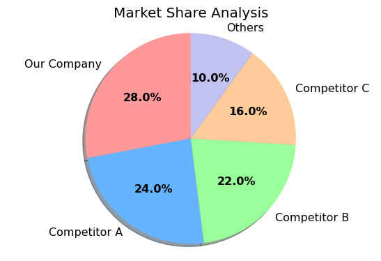
Scatter Plots for Relationships
Scatter plots reveal relationships between two variables.
# Marketing spend vs. sales data for different campaigns
marketing_spend = [15, 22, 34, 42, 58, 63, 72, 80, 95, 110] # thousands
sales_revenue = [42, 55, 73, 82, 103, 118, 126, 132, 145, 162] # thousands
campaign_sizes = [30, 45, 60, 55, 75, 80, 90, 100, 120, 140] # number of leads
fig, ax = plt.subplots(figsize=(7, 4))
# Create scatter plot with varying sizes based on campaign size
scatter = ax.scatter(marketing_spend, sales_revenue, s=campaign_sizes,
alpha=0.6, c=campaign_sizes, cmap='viridis')
# Add a colorbar to indicate campaign size
cbar = plt.colorbar(scatter)
cbar.set_label('Campaign Size (Leads)', fontsize=12)
# Add trend line
z = np.polyfit(marketing_spend, sales_revenue, 1)
p = np.poly1d(z)
ax.plot(marketing_spend, p(marketing_spend), "r--", alpha=0.8)
# Add R-squared value
correlation = np.corrcoef(marketing_spend, sales_revenue)[0,1]
r_squared = correlation**2
ax.text(20, 150, f'R² = {r_squared:.2f}', fontsize=12)
ax.set_title('Marketing Spend vs. Sales Revenue', fontsize=15)
ax.set_xlabel('Marketing Spend (thousands $)', fontsize=12)
ax.set_ylabel('Sales Revenue (thousands $)', fontsize=12)
ax.grid(True, linestyle='--', alpha=0.7)
plt.tight_layout()
plt.show()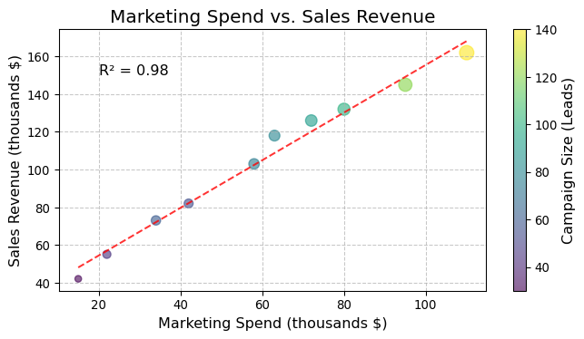
Histograms for Distributions
Histograms show the distribution of a single variable.
# Customer purchase amounts
np.random.seed(42) # For reproducibility
purchase_amounts = np.random.lognormal(mean=4.0, sigma=0.6, size=1000)
fig, ax = plt.subplots(figsize=(6, 4))
# Create histogram
n, bins, patches = ax.hist(purchase_amounts, bins=30,
edgecolor='black', alpha=0.7)
# Add mean and median lines
ax.axvline(purchase_amounts.mean(), color='red', linestyle='dashed',
linewidth=2, label=f'Mean: ${purchase_amounts.mean():.2f}')
ax.axvline(np.median(purchase_amounts), color='green', linestyle='dashed',
linewidth=2, label=f'Median: ${np.median(purchase_amounts):.2f}')
ax.set_title('Distribution of Customer Purchase Amounts', fontsize=15)
ax.set_xlabel('Purchase Amount ($)', fontsize=12)
ax.set_ylabel('Frequency', fontsize=12)
ax.legend()
plt.tight_layout()
plt.show()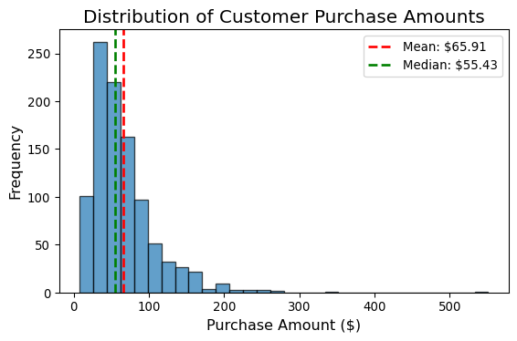
Multiple Plots and Subplots
Creating dashboards with multiple visualizations.
# Create a figure with 2 rows and 2 columns of subplots
fig, axes = plt.subplots(2, 2, figsize=(10, 8))
# Flatten axes array for easier indexing
axes = axes.flatten()
# Plot 1: Monthly Sales (top-left)
axes[0].plot(months, sales_2024, marker='o', color='blue')
axes[0].set_title('Monthly Sales')
axes[0].set_xticks(months)
axes[0].set_xticklabels(month_names, rotation=45)
# Plot 2: Department Performance (top-right)
axes[1].bar(departments, performance, color='skyblue')
axes[1].set_title('Department Performance')
axes[1].set_ylim(0, 100)
# Add this line to reduce the x-axis font size
axes[1].tick_params(axis='x', labelsize=8) # Adjust font size as needed
# Plot 3: Market Share (bottom-left)
axes[2].pie(market_share, labels=companies, autopct='%1.1f%%', startangle=90)
axes[2].set_title('Market Share')
# Plot 4: Marketing vs Sales (bottom-right)
scatter = axes[3].scatter(marketing_spend, sales_revenue, s=campaign_sizes,
alpha=0.6, c=campaign_sizes, cmap='viridis')
axes[3].plot(marketing_spend, p(marketing_spend), "r--", alpha=0.8)
axes[3].set_title('Marketing vs Sales')
# Adjust spacing between subplots
plt.tight_layout()
plt.show()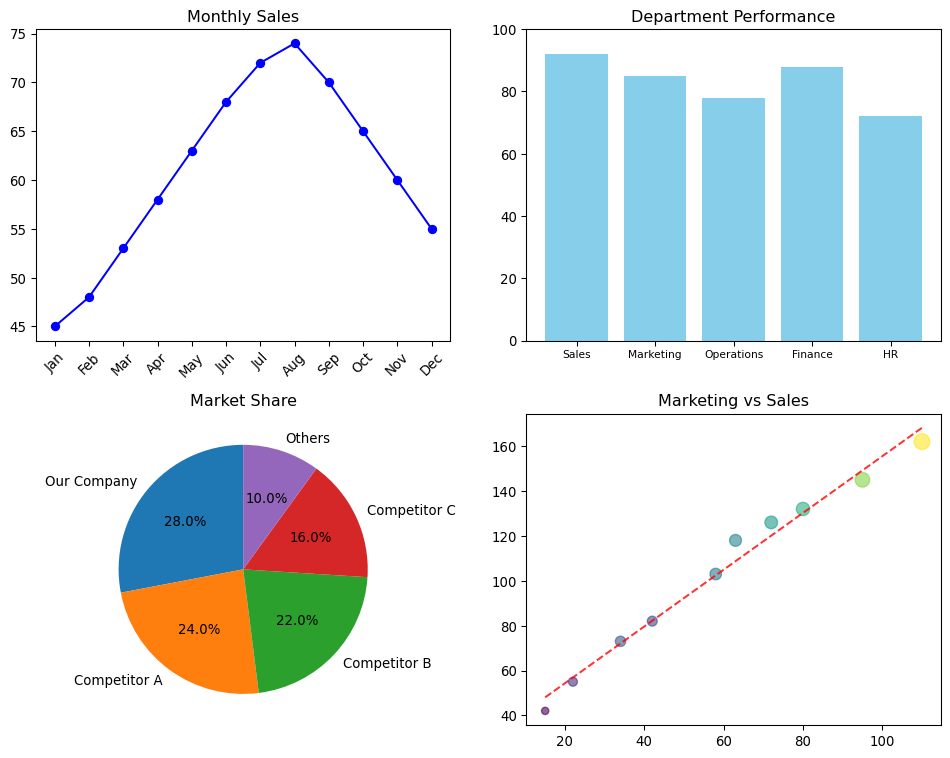
Integrating Matplotlib with Pandas
Pandas simplifies visualization with its built-in plotting methods.
# Create a DataFrame with business data
data = {
'Month': month_names,
'Sales_2023': sales_2023,
'Sales_2024': sales_2024,
'Marketing_2023': [10, 12, 15, 18, 20, 22, 25, 26, 23, 20, 18, 15],
'Marketing_2024': [12, 14, 17, 21, 24, 27, 30, 31, 28, 24, 20, 18]
}
df = pd.DataFrame(data)
# Set 'Month' as the index
df.set_index('Month', inplace=True)
# Plot directly from the DataFrame
fig, ax = plt.subplots(figsize=(6, 4))
df[['Sales_2023', 'Sales_2024']].plot(kind='line', marker='o', ax=ax)
ax.set_title('Sales Comparison: 2023 vs 2024', fontsize=15)
ax.set_ylabel('Sales (thousands $)', fontsize=12)
ax.grid(True, linestyle='--', alpha=0.7)
ax.legend(fontsize=12)
plt.tight_layout()
plt.show()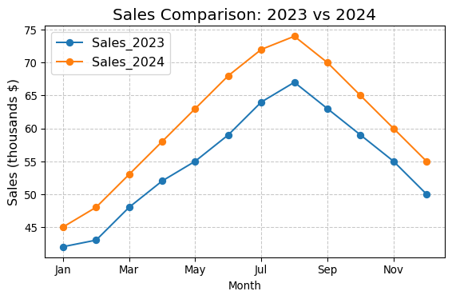
More Pandas Plotting Examples
# Bar plot comparing quarterly sales by product
quarterly_sales = pd.DataFrame({
'Q1': [120, 95, 75, 45],
'Q2': [135, 110, 85, 55],
'Q3': [150, 120, 90, 60],
'Q4': [165, 130, 95, 65]
}, index=['Product A', 'Product B', 'Product C', 'Product D'])
# Plot stacked bar chart
quarterly_sales.plot(kind='bar', stacked=True, figsize=(6, 4),
colormap='viridis')
plt.title('Quarterly Sales by Product', fontsize=15)
plt.xlabel('Product', fontsize=12)
plt.ylabel('Sales (thousands $)', fontsize=12)
plt.legend(title='Quarter', fontsize=10)
plt.grid(axis='y', linestyle='--', alpha=0.7)
plt.tight_layout()
plt.show()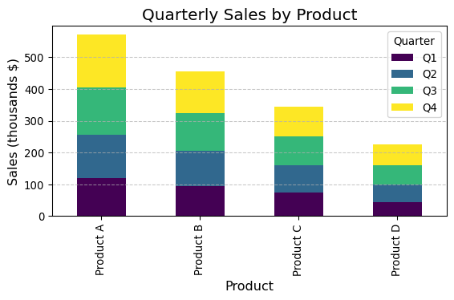
Best Practices for Business Visualizations
Choose the Right Plot Type:
- Bar charts: For comparing categories.
- Line charts: For trends over time.
- Scatter plots: For relationships between variables.
- Pie charts: For parts of a whole (use sparingly, limit to 5-7 categories).
- Histograms: For distributions.
Clarity and Simplicity:
- Minimize “chart junk” (unnecessary elements).
- Use clear titles and labels.
- Include units of measurement.
- Avoid 3D effects for 2D data.
Honest Representation:
- Start y-axis at zero for bar charts.
- Use appropriate scales.
- Avoid misleading visualizations.
Accessibility:
- Use colorblind-friendly palettes.
- Ensure sufficient contrast.
- Use patterns in addition to colors when necessary.
Storytelling:
- Highlight the most important insights.
- Use annotations to explain key points.
- Order categories logically (e.g., by value rather than alphabetically).
Saving Figures
For reports and presentations, save your visualizations:
# Create your visualization
fig, ax = plt.subplots(figsize=(7, 4))
ax.plot(months, sales_2024, marker='o')
ax.set_title('Monthly Sales (2024)')
# Save in different formats
plt.savefig('monthly_sales.png', dpi=300, bbox_inches='tight') # PNG for web
plt.savefig('monthly_sales.pdf', bbox_inches='tight') # PDF for documents
plt.savefig('monthly_sales.svg', bbox_inches='tight') # SVG for scalingPractical Example 1: Comparing Product Sales
Let’s create a visual to compare the sales of two products over a few months.
# Define new variables for this example
example_months = ['Jan', 'Feb', 'Mar', 'Apr', 'May']
sales_a = [120, 150, 130, 160, 140]
sales_b = [90, 110, 100, 130, 120]
fig, ax = plt.subplots(figsize=(6, 4))
ax.plot(example_months, sales_a, marker='o', label='Product A')
ax.plot(example_months, sales_b, marker='s', label='Product B')
ax.set_title('Product Sales Comparison', fontsize=15)
ax.set_xlabel('Month', fontsize=12)
ax.set_ylabel('Sales', fontsize=12)
ax.legend()
ax.grid(True, linestyle='--', alpha=0.7)
plt.tight_layout()
plt.show()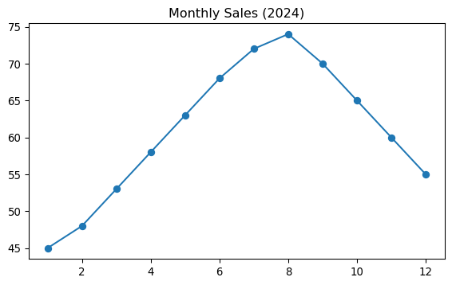
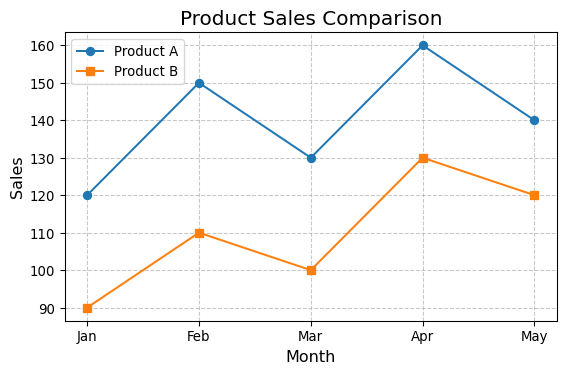
Practical Example 2: Distribution of Customer Ages
Let’s visualize the distribution of customer ages using a histogram.
np.random.seed(0) # for reproducible results
customer_ages = np.random.normal(loc=35, scale=10, size=1000) # generate 1000 random ages
fig, ax = plt.subplots(figsize=(6, 4))
ax.hist(customer_ages, bins=30, edgecolor='black', alpha=0.7)
ax.set_title('Distribution of Customer Ages', fontsize=15)
ax.set_xlabel('Age', fontsize=12)
ax.set_ylabel('Frequency', fontsize=12)
plt.tight_layout()
plt.show()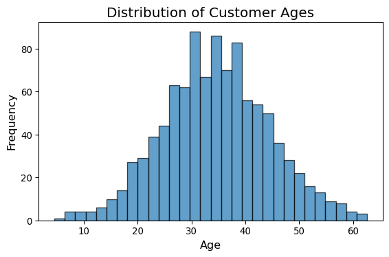
Annotating Plots
Annotations are essential for highlighting key points and providing context to your visualizations. Matplotlib provides several tools for adding text, arrows, and other annotations.
Adding Text Annotations
The ax.text() method allows you to add text at specific coordinates.
# Make sure to use the original months variable with 12 elements
months = range(1, 13)
sales_2024 = [45, 48, 53, 58, 63, 68, 72, 74, 70, 65, 60, 55]
fig, ax = plt.subplots(figsize=(6, 4))
ax.plot(months, sales_2024, marker='o')
ax.set_title('Monthly Sales (2024)')
ax.set_xlabel('Month')
ax.set_ylabel('Sales (thousands $)')
# Add text annotation
ax.text(6, 70, 'Peak Sales', fontsize=12, color='red')
plt.tight_layout()
plt.show()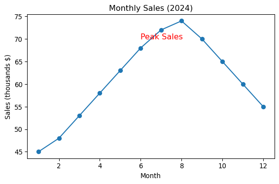
Adding Arrow Annotations
The ax.annotate() method allows you to add arrows and text to point to specific data points.
# Make sure to use the original months variable with 12 elements
months = range(1, 13)
sales_2024 = [45, 48, 53, 58, 63, 68, 72, 74, 70, 65, 60, 55]
fig, ax = plt.subplots(figsize=(6, 4))
ax.plot(months, sales_2024, marker='o')
ax.set_title('Monthly Sales (2024)')
ax.set_xlabel('Month')
ax.set_ylabel('Sales (thousands $)')
# Add arrow annotation
ax.annotate('Peak Sales', xy=(7, 74), xytext=(9, 72),
arrowprops=dict(facecolor='black', shrink=0.05),
fontsize=12)
plt.tight_layout()
plt.show()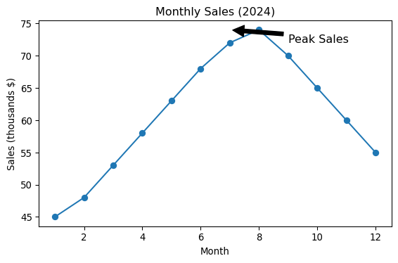
Adding Text with Boxes
You can add text with boxes to make your annotations stand out.
# Make sure to use the original months variable with 12 elements
months = range(1, 13)
sales_2024 = [45, 48, 53, 58, 63, 68, 72, 74, 70, 65, 60, 55]
fig, ax = plt.subplots(figsize=(6, 4))
ax.plot(months, sales_2024, marker='o')
ax.set_title('Monthly Sales (2024)')
ax.set_xlabel('Month')
ax.set_ylabel('Sales (thousands $)')
# Add text with box
ax.text(3, 60, 'Important Trend', fontsize=12,
bbox=dict(facecolor='lightblue', alpha=0.5))
plt.tight_layout()
plt.show()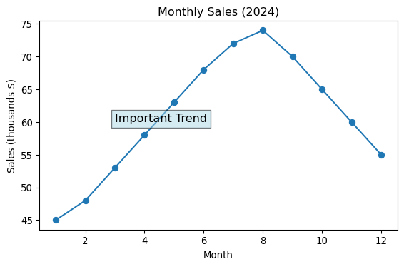
Adding Multiple Annotations
You can add multiple annotations to highlight different aspects of your plot.
# Make sure to use the original months variable with 12 elements
months = range(1, 13)
sales_2024 = [45, 48, 53, 58, 63, 68, 72, 74, 70, 65, 60, 55]
fig, ax = plt.subplots(figsize=(6, 4))
ax.plot(months, sales_2024, marker='o')
ax.set_title('Monthly Sales (2024)')
ax.set_xlabel('Month')
ax.set_ylabel('Sales (thousands $)')
# Add multiple annotations
ax.annotate('Peak Sales', xy=(8, 74), xytext=(10, 72),
arrowprops=dict(facecolor='black', shrink=0.05),
fontsize=12)
ax.text(3, 60, 'Important Trend', fontsize=12,
bbox=dict(facecolor='lightblue', alpha=0.5))
ax.text(1, 50, 'Low Sales Period', fontsize=10, color='gray')
plt.tight_layout()
plt.show()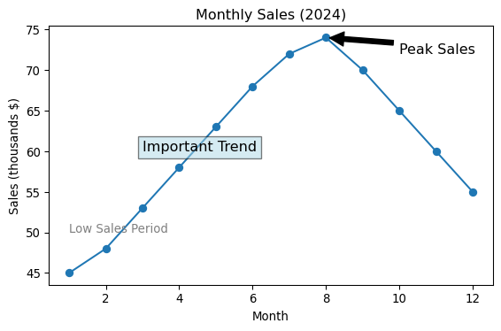
Using Annotations with Different Styles
You can customize the appearance of your annotations using various parameters.
# Make sure to use the original months variable with 12 elements
months = range(1, 13)
sales_2024 = [45, 48, 53, 58, 63, 68, 72, 74, 70, 65, 60, 55]
fig, ax = plt.subplots(figsize=(6, 4))
ax.plot(months, sales_2024, marker='o')
ax.set_title('Monthly Sales (2024)')
ax.set_xlabel('Month')
ax.set_ylabel('Sales (thousands $)')
# Customize arrow properties
ax.annotate('Peak Sales', xy=(8, 74), xytext=(10, 72),
arrowprops=dict(facecolor='green',
arrowstyle='->', linewidth=2),
fontsize=12, color='green')
# Customize text box properties
ax.text(3, 60, 'Important Trend', fontsize=12,
bbox=dict(facecolor='yellow', alpha=0.3, edgecolor='red', linewidth=2))
plt.tight_layout()
plt.show()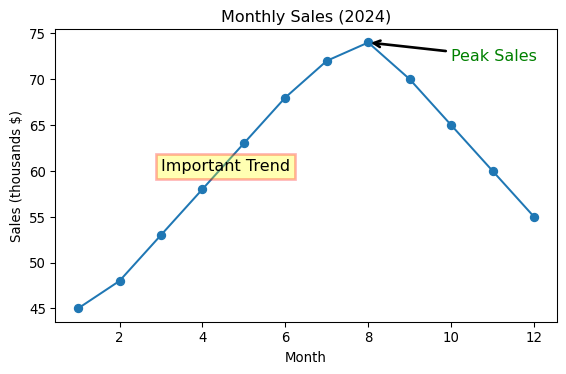
Exercises
See this weeks practice problem set for 20 questions on Matplotlib along with solutions.
Summary
In this lecture, we’ve covered:
- The importance of data visualization in business analytics.
- Basic plotting with Matplotlib’s object-oriented interface.
- Customizing plots for clarity and impact.
- Various plot types for different business scenarios.
- Creating multi-plot dashboards.
- Integrating Matplotlib with Pandas.
- Best practices for business data visualization.
- Annotating Plots with Text and Arrows
Resources
Official Documentation
Books
- “Storytelling with Data” by Cole Nussbaumer Knaflic
- “Data Visualization: A Practical Introduction” by Kieran Healy
Online Resources